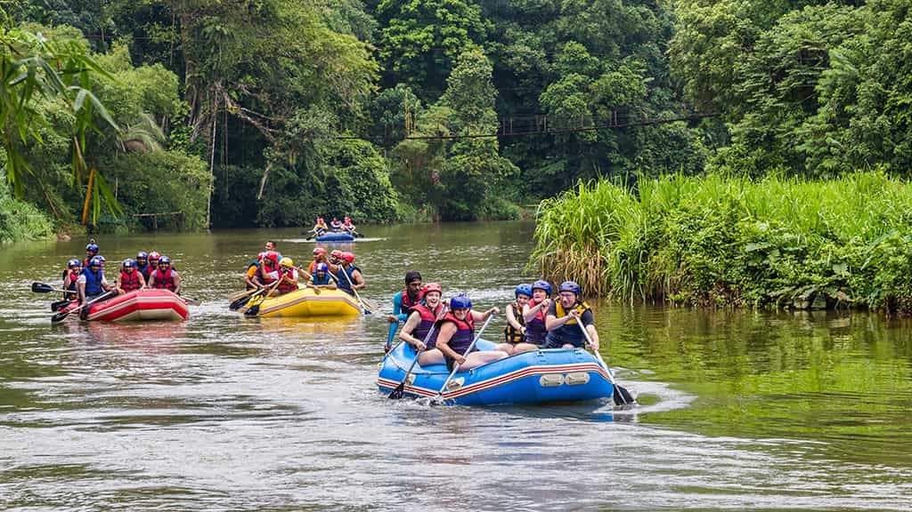

Mangue dos Marinheiros
Um passeio tranquilo, ideal para famílias e iniciantes. Navegamos por águas calmas em meio ao manguezal, observando a rica vida marinha e as aves da região. Perfeito para quem quer conhecer o rafting sem abrir mão da serenidade.